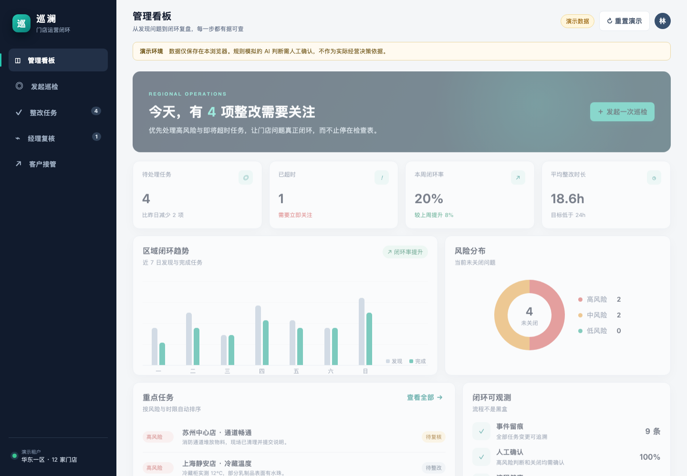
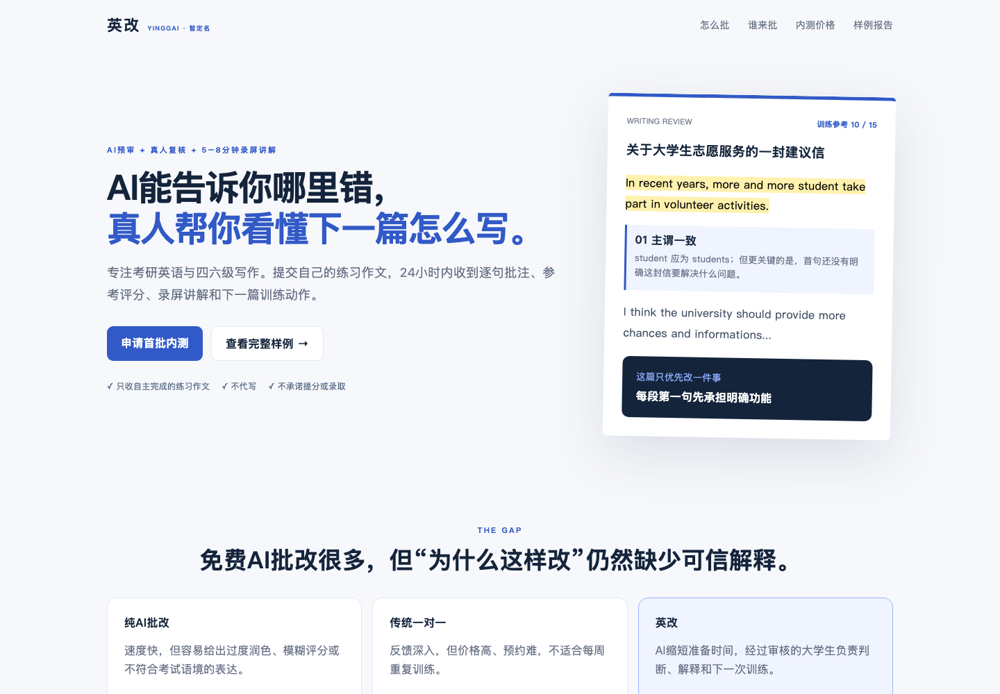
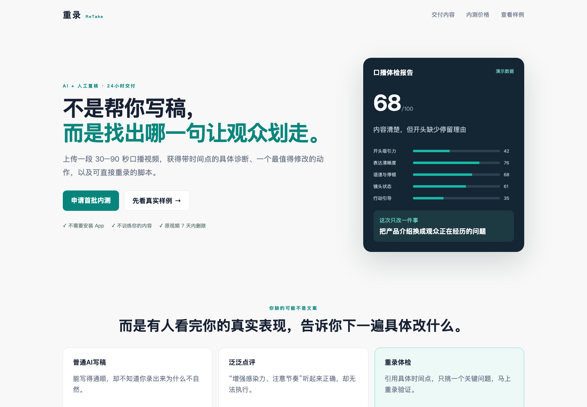

Inspection, ticketing, review, approval and reporting workflows.
AI-ASSISTED · TESTED · 3–7 DAY DELIVERY
Turn a messy workflow into a prototype people can actually try.
I build focused, responsive prototypes for internal tools, AI-assisted services, dashboards and operational workflows—before you spend weeks building the wrong product.
✓ No fake production claims✓ Sample data by default✓ AI use disclosed
ONE PRODUCTIZED SERVICE
Rapid AI Workflow Prototype
Best for founders and operations teams who know the pain, but need a concrete workflow before committing to full development.
Human-in-the-loop coaching, review, scoring and content pipelines.
Decision-focused views with realistic data, states and exceptions.
PROOF OF WORK
Three working concepts, not client claims
These are self-initiated demonstrations built with fictional/sample data. No invented testimonials.

OPERATIONS
Multi-store inspection workflow
A realistic inspection, assignment, SLA and exception dashboard designed around Feishu operations.
- Role-based workflow states
- Overdue and repeated-issue visibility
- Responsive management dashboard

HUMAN-IN-THE-LOOP AI
English writing review service
An AI pre-review + human video feedback concept with pricing, reviewer SOP and a measurable 14-day pilot.
- Evidence-linked feedback
- Quality and privacy boundaries
- Unit economics and stop conditions

COACHING
Video speaking review
A low-cost service pilot that diagnoses one high-impact issue and asks the user to record a second attempt.
- Timestamped evidence
- One-action coaching design
- Before/after feedback loop
CLEAR SCOPE, FIXED START
Choose the smallest useful prototype
$79
One responsive screen for one core workflow.
- Sample data
- One revision
- 3-day delivery
- Source files + README
$249
Up to three connected views with realistic states.
- Workflow map
- Responsive interaction
- Two revisions
- 5-day delivery
- Test notes + handover
$599
Up to five views plus a pilot and implementation plan.
- Data model
- Integration assumptions
- Success/stop metrics
- Two revisions
- 7-day delivery
HOW IT WORKS
Small inputs. Visible checkpoints.
- 01BriefSend the users, current workflow, pain point and desired decision.
- 02Scope lockI return the screens, exclusions and delivery evidence before building.
- 03PrototypeYou receive a working browser prototype using fictional or approved data.
- 04VerificationResponsive render, core interactions and handover artifacts are checked.
Transparent AI-assisted delivery
Research, coding and content may use AI tools. Deliverables are inspected and tested before handover. I do not upload confidential client data to public AI services without written permission, and I do not claim production security, legal compliance or business results that were not verified.
Not included by default
Production authentication, live payment, regulated advice, unauthorized scraping, real personal data, app-store submission, or ongoing hosting.
All three projects are self-initiated concept prototypes using fictional or sample data. They are not presented as paid client work.